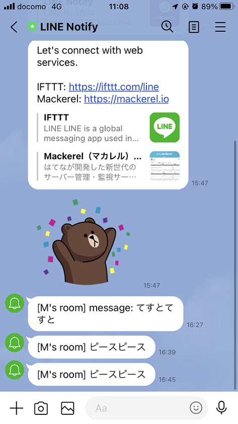

デザイン演習第６回。
Pythonでプログラミング。
授業の振り返り
すべてをプログラミングしようとすると膨大な時間がかかる。
そこである程度まとまった動きをするような関数がPaythonにも備わっている。
それがライブラリというものである。
またサードパーティーが開発し、オープンソース化されたものもあるが、
これを外部ライブラリという。
グループワーク
今回の授業ではこれらのライブラリを活用して
生活の悩みを解決できるプログラミングを作製することとなった。
私は普段チェックするブログをいちいち巡回せずに
更新された時だけLINEのAPIを介して通知してくれるシステムをつくることにした。
考えた手順
- 昼と夜にchromedriverを起動。
- chromedriverで特定のブログにアクセスし更新されているか確認
- 更新されているか、されていれば記事のリンクをLINE APIに通知。
しかし…！
一応、LINEでメッセージをつくるプログラムは成功したものの

- webdriverを正常に動かすだけでかなり手間取った。
- ゆえにページ更新を検知させるまでに至らなかった。
- webから引っ張ってきたデータをLINEの通知に載せるようなプログラムの合体方法がわからなかった
ということからモノにすることができなかった。
宿題を行って
結果はうまく作動しなかったが、これほど難しいとは思わなかった。
いい塩梅のソースをネットから引っ張ってくるのも力がかかるものだと痛感したとともに
ソースをイチから生み出すプログラマーはすごい仕事なんだなと感じた。
なんだか失敗続きである。
これもまた可能であればリトライすることにする。